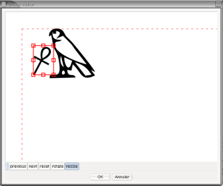

Mouse Editing
Editing with the mouse is a very simple, but slow
process. Usually, you will mix it with one of the two others. You
can do the following :
Setting a cursor position
To set the current cursor position, simply click on the
hieroglyphic panel.
Selecting a zone
The selection stands between the cursor, and what is called the
mark. The whole selection is drawn in light blue. Some operations
are possible only if a zone of text is selected.
To select a zone of text, you can use a number of ways :
- Mac style : shift-click on a point in the text ; the whole
text between this point and the cursor will be selected ;
- Unix style : same, but using right-mouse button. This might
change one day if I decide to use contextual menus.
- keyboard selection :
shift + left or right arrow selects and move.
- mouse dragging
Adding a sign chosen from a menu
The hieroglyphs menu gives access to the signs of the
standard Gardiner list. Simply select a sign, and it will be added
at the cursor position.
Grouping signs
This is done using the "Text manipulation" menu. You can group
signs into vertical or horizontal groups, by selecting the signs
(or cadrats), and choosing either "group horizontal" or "group
vertical". Note that you can break the groups with the menu
"explode group". All kinds of groups can be "exploded".
"Group Horizontal" has the keyboard shortcut "Ctrl-h"
"Group Vertical" has the keyboard shortcut "Ctrl-g"
Ligatures
JSesh knows a number of "special groups".
Editing groups
When you meet a very specific group, one-of-a-kind type, in which
you want to place the signs exactly where you want, you can select
the edit group menu entry. The edited group will be
either the selected group, if there is a selection (overlined in
blue), or the last group before the cursor, if there is no
selection.
It will open the following window :

You will be able to move the signs, to scale them, and to rotate
them. Note that scaling and rotations are triggered by two
buttons. To move a sign, click on it and drag it where you
want. To rotate or scale it, click and drag one of the small red
boxes around the currently selected sign.
ROSMORDUC Serge
Last modified: Thu Nov 3 14:42:09 CET 2005